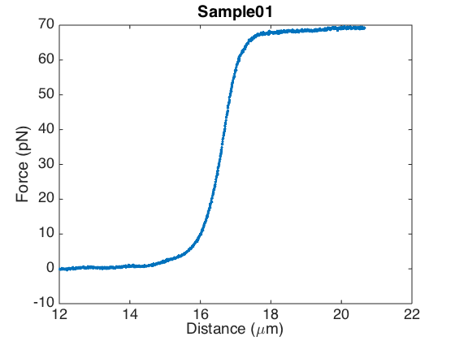
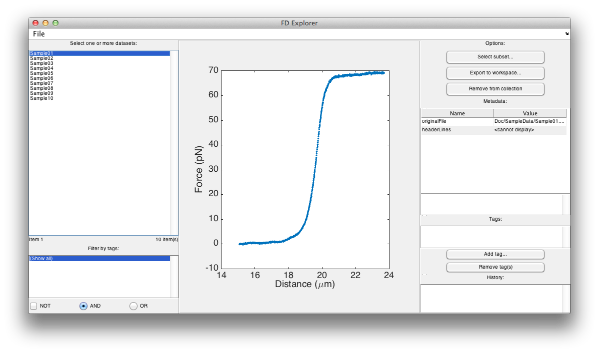

FDFIT TUTORIAL
This tutorial will guide you through the basic functionality of the FDFIT package. We will analyze a sample dataset of double-stranded DNA force-extension curves, using the approach described in Ref. 1. Along the way, you will learn to load force-extension data into MATLAB, process and visualize it, and fit the eWLC model to the data.
Contents
Before You Begin
Make sure MATLAB's "Current Folder" is set to the folder containing the FDFIT package. That should be the folder containing a script called "init.m", as well as a bunch of subfolders.
Before you start, you should run the init script. This adds all the subfolders to MATLAB's search path, so MATLAB can find all the functions in the package. (Of course, it's also possible to do this yourself using MATLAB's user interface.)
init;
Loading the Sample Data
The FDFIT package contains functions for loading force-extension data from various sources, including text files (CSV, ASCII, etc.). Let's load some sample data for double-stranded DNA, which has been included with this code.
Note that all functions in this package are documented. See, for example, the documentation of the readasciifile function used below.
fd = readasciifile('Doc/SampleData/Sample01.csv', 'HeaderLines', 6);
Plotting Data
The fd variable we've just created contains our F,d (force-distance) data. Let's have a look at it:
plotfd(fd);
plotfd supports various styles of plotting. For example, we can also plot the data as a pair of F,t and d,t graphs:
plotfd(fd, 'style', 'fdt');
Metadata
The fd variable containing our data is a MATLAB object. In case you're not familiar with object-oriented programming: an object is similar to a struct, with a touch of added magic: besides just fields, the object can also contain associated functions.
Let's have a closer look at the contents of fd:
disp(fd)
[ FD DATA OBJECT ] |--- Name: Sample01 |--- Metadata: ...
There isn't a lot to see, but your eye might be caught by the line "Metadata". As a matter of fact, FdData objects can keep track of simple metadata. For data from ASCII files, this isn't a lot, but we'll encounter some other examples where this is more useful.
To show the metadata in its full glory, use:
disp(fd, 'full')
[ FD DATA OBJECT ]
|--- Name: Sample01
|--- Metadata:
| |--- originalFile : Doc/SampleData/Sample01.csv
| |--- headerLines{} :
| | # Lambda phage dsDNA (48.5 kb)
| | # Buffer conditions: 500 mM NaCl, 10 mM Tris-HCl (pH 7.6)
| | # Bead diameter (um): 3.05
| | # Original file: 20130903-133004 050Mg 500NaCl #001-001
| | # Original file ID: F63FE83C-F34E-47A6-8137-5F22A6D5C57B
| | Bead-to-bead distance (um),Force (pN)
As you can see, the object contains, in its metadata, the original location the file was read from; as well as the header lines. This metadata was placed there by the readasciifile function.
Simple Data Corrections
Now, while plotting the data, we have noticed that the distance values are off. Lambda DNA should have a contour length of 16.5 um, but judging from the F,d plot, it's more like 19.5 um. Looking back at the metadata, we can see where this is coming from: the distance values include the bead diameter. We'll have to subtract that.
FdData objects contain some useful functions for these kinds of corrections. For example, to fix the bead diameter issue, we can use the shift function:
fd = fd.shift('d', -3.05);
figure;
plotfd(fd);
 That looks more like it. Note that, if we now look at the fd variable again...
disp(fd)
[ FD DATA OBJECT ]
|--- Name: Sample01
|--- Metadata: ...
|--- History
|--- shift(d, -3.05)
The new FdData object that was returned by the shift function has remembered it's the shifted version of the original. Under "History", you see a line "shift(d, -3.05)" that wasn't there before.
This is a useful little feature that should help with taking care of data provenance. All FdData functions that manipulate the data will add such a line to the history list, so you can retrace your steps later on. Some of these functions are:
- shift: shift the data along a particular axis, i.e., add a constant offset to a particular column of the data;
- subset: take a subsest of the data, for example, only the data between 0 and 30 pN, or only the data between 10 and 15 um.
- scale: scale the data, i.e., multiply a particular column by a scaling factor;
- fragment: takes a subrange of the data ? like subindexing an array. Comparable to "subset", but uses data indices instead of column values.
By the way, it's also possible to use a visual tool to select subsets of the data. Call the trimfd function to open a dialog that allows you to select a range of data using two draggable cursor lines:
fd_fragment = trimfd(fd);
The trimfd dialog window. Drag the red cursor lines in the right half of the screen to select a subset of the data.
Basic Fitting
Of course, the main goal of the package is to fit F,d curves. Let's start by doing a simple Odijk eWLC fit to our sample curve.
f = fitfd(fd)
Only using data up to 30 pN (use the "noTrim" flag to avoid this).
f =
General model:
f(x) = fOdijkInv_f0(x,Lp,Lc,S,F0)
Coefficients (with 95% confidence bounds):
Lp = 42.9 (41.2, 44.6)
Lc = 16.71 (16.69, 16.73)
S = 1765 (1690, 1840)
F0 = -0.2276 (-0.2617, -0.1935)
That's all: if you don't give any other options, this will fit the Odijk extensible worm-like chain [2,3], with a force offset, to all data up to 30 pN. Let's plot the resulting fit:
plotfdfit(fd, f);
The fitfd function has quite a number of options (see the documentation for details). As one example, we could try fitting a slightly different fit model, and explicitly give the starting values for the fit parameters. Here, we'll use a model that includes an additional 'distance offset' parameter, so we allow for possible variations in bead diameter (i.e., horizontal shifts of the curve). In this case, we'll also have to provide the expected contour length (Lc), with respect to which the distance offset is measured.
f = fitfd(fd, 'model', 'odijk-d0-f0', 'startParams', [50 1500 0 0], 'Lc', 16.5)
Only using data up to 30 pN (use the "noTrim" flag to avoid this).
f =
General model:
f(x) = fOdijkInv_d0_f0(x,Lp,args.Lc,S,d0,F0)
Coefficients (with 95% confidence bounds):
Lp = 41.82 (40.07, 43.58)
S = 1743 (1671, 1814)
d0 = -0.2109 (-0.2305, -0.1912)
F0 = -0.2276 (-0.2617, -0.1935)
Collections of Data
Now you know some of the basic commands, we can turn to one of the more powerful features of the package: managing collections of data.
We can load groups of FdData objects into an 'array', called an FdDataCollection (another type of object). Using these collections, we can easily explore the data, apply corrections on groups as a whole, and do global fits.
Let's start by loading all sample data curves into one of these collections. Oh, and while we're at it, let's not forget to correct for those bead diameters:
collection = readasciifolder('Doc/SampleData/*.csv', 'HeaderLines', 6, ... 'beadDiameter', 3.05);
Reading Doc/SampleData/Sample01.csv... Reading Doc/SampleData/Sample02.csv... Reading Doc/SampleData/Sample03.csv... Reading Doc/SampleData/Sample04.csv... Reading Doc/SampleData/Sample05.csv... Reading Doc/SampleData/Sample06.csv... Reading Doc/SampleData/Sample07.csv... Reading Doc/SampleData/Sample08.csv... Reading Doc/SampleData/Sample09.csv... Reading Doc/SampleData/Sample10.csv...
As before, we can use the disp function to peek inside:
disp(collection)
# name tags -------------------------------------------------------------------------------- (1 ) Sample01 (2 ) Sample02 (3 ) Sample03 (4 ) Sample04 (5 ) Sample05 (6 ) Sample06 (7 ) Sample07 (8 ) Sample08 (9 ) Sample09 (10 ) Sample10
And we can also plot the data:
figure; plotfd(collection);

Once we have data in a collection, there is also a simple user interface we can bring up to browse the data:
explorefd(collection);

In this window, there's a few nifty features:
- You can plot multiple graphs simultaneously, by holding down the Ctrl key (or the Cmd key on the Mac), and clicking in the data list on the left-hand side.
- The buttons in the top right corner allow you to visually trim the selected data files (using the window with red cursors you've seen before), and to remove files you don't like from the collection.
- You can tag data curves. Each curve in the collection can have one or more associated tags, similar to the tags you may have encountered on websites like Gmail. You can, for example, give all curves that were measured in the presence of protein a tag protein. Later on, you can then extract those protein curve using the command:
collection.getByTag('protein')This will give you a new collection containing just the F,d curves that have the protein tag.
- The window also allows you to filter by tags, using the controls in the bottom-left corner.
Collections are great, since they allow you to easily manipulate multiple datasets at once. For example, we can fit all the curvecs in one go, and then browse through the individual fit results:
fits = fitfd(collection); explorefdfits(fits);
In the Cell Explorer that pops up, you can use the arrow, PgUp and PgDn keys on your keyboard to look at the fits we just made.
Most importantly, having data in a collection allows you to use the global fitting technique described in the paper [1]. Simply run:
gfit = fitfdglobal(collection, 'Lc', 16.5)
Only using data up to 30 pN (use the "noTrim" flag to avoid this).
Local minimum possible.
lsqcurvefit stopped because the final change in the sum of squares relative to
its initial value is less than the default value of the function tolerance.
gfit =
Lp: 40.4514
Lc: 16.5000
S: 1.8313e+03
d0: [10x1 double]
F0: [10x1 double]
If you want to inspect the fit results, use:
plotglobalfdfits(collection, gfit);
Twistable Worm-Like Chain Analysis
The twistable worm-like chain (tWLC) analysis has been implemented as an object TwlcAnalysis. To run a tWLC analysis on our sample data, follow these steps:
twa = TwlcAnalysis('data', collection, 'nBootstrapIter', 4)
twa =
<a href="matlab:doc TwlcAnalysis;">TwlcAnalysis</a> object
tWLC analysis on 10 force-extension curves.
Parameters:
Lc = 16.5
Fc = 30.6
C = 440
nBootstrapIter = 4
nSweeps = 100
sweepBoundaries = 40 70
osPlateauRegion = 18.5 20
twlcFitBounds = 1 550 5500000 - 2-010000 620
twlcFitStartParams =
--> Call "analyze" first to run the analysis.
This creates a TwlcAnalysis object, that will run all the steps described in the paper [1]. We'll decrease the number of bootstrap iterations for now, but for an actual analysis, you should probably keep this to the default setting of 100.
For a precise description of all the parameters, I'll have to refer you to the paper [1], its Supplementary Information, as well as the TwlcAnalysis documentation.
As the output already indicates, we should now call the "analyze" function to run the actual analysis:
twa.analyze();
Aligning...
Only using data up to 30 pN (use the "noTrim" flag to avoid this).
Local minimum possible.
lsqcurvefit stopped because the final change in the sum of squares relative to
its initial value is less than the default value of the function tolerance.
Stretching F,d curves to match average plateau height: 70.0629
Only using data up to 30 pN (use the "noTrim" flag to avoid this).
Local minimum possible.
lsqcurvefit stopped because the final change in the sum of squares relative to
its initial value is less than the default value of the function tolerance.
Bootstrapping & sweeping...
<a href="matlab:doc TwlcAnalysis;">TwlcAnalysis</a> object
tWLC analysis on 10 force-extension curves.
Parameters:
Lc = 16.5
Fc = 30.6
C = 440
nBootstrapIter = 4
nSweeps = 100
sweepBoundaries = 40 70
osPlateauRegion = 18.5 20
twlcFitBounds = 1 550 5500000 - 2-010000 620
twlcFitStartParams =
Fit results:
Fmax: 64.2424 pN
Lp: 40.4384 +/- 0.186193 nm
S: 1818.21 +/- 8.92383 pN
g0: -620.274 +/- 14.5931 pN nm
g1: 16.969 +/- 0.197899 nm
Call "plotFit" to plot the fit, and "plotSweeps" to plot the
sweep results.
Plotting the fit:
twa.plotFit();
Usually, it's also a good idea to inspect the sweep results. You can do this using the plotSweeps function:
twa.plotSweeps();
REFERENCES
- O.D. Broekmans, G.A. King, G.J. Stephens, G.J.L. Wuite, DNA Twist Changes With Magnesium(2+) Concentration, arXiv:1412.8753 [physics.bio-ph].
- T. Odijk, Stiff Chains and Filaments under Tension, Macromolecules 28, 7016-7018 (1995).
- M. D. Wang, H. Yin, R. Landick, J. Gelles, S. M. Block, Stretching DNA with optical tweezers., Biophysical journal 72, 1335-46 (1997).